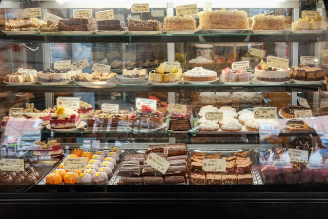

Welcome to Sweet Treats Bakery
At Sweet Treats Bakery, every dessert begins with a little imagination and a whole lot of love. Our kitchen is a place where creativity rises like warm dough, and every recipe is crafted to bring joy to your day. Whether you’re craving a classic favorite or a playful, sprinkle‑covered creation, our treats are designed to make you smile from the very first bite. We believe that sweetness should feel magical, comforting, and unforgettable — and we’re delighted to share that magic with you.
